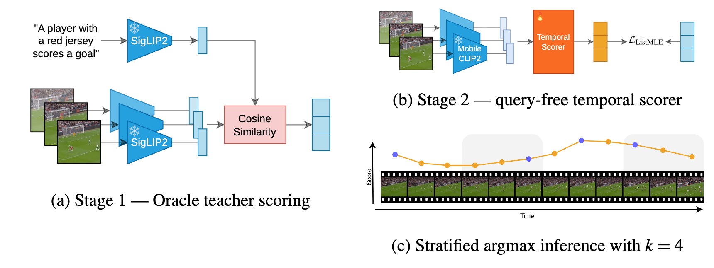

PEEK has been accepted at BMVC 2026 — see you in Lancaster in November! The camera-ready version is on arXiv.
PhD student · machine learning & computer vision
Killian Steunou
I'm a PhD student at Institut Polytechnique de Paris and Moments Lab, where I work on efficient omni-modal learning for generalized video understanding — in short: how to make video models that see enough while computing less.
Before the PhD, I studied mathematics and statistics (Toulouse School of Economics), then vision and learning (Master MVA, ENS Paris-Saclay), with research internships at Idemia, CLS, and JoliBrain. I care about reproducible research, open source, and models that survive contact with the real world.

News
Our preprint PEEK: Picking Essential frames via Efficient Knowledge distillation is out on arXiv — with code, model weights, a project page, and a live demo you can try in the browser.
New blog post: NLP metrics for image & video captioning — a visual guide (n-grams, TF-IDF, BLEU, ROUGE-L, METEOR, CIDEr, with worked examples).
New blog post: Efficiency follows capability — a decade of video understanding research trends, mined from arXiv (2015–2025).
Started my industrial PhD on efficient omni-modal learning for generalized video understanding, joint between Institut Polytechnique de Paris and Moments Lab.
older news
Preprint: Sparse representations improve adversarial robustness of neural network classifiers, with Théo Druilhe and Sigurd Saue.
Joined Idemia as a deep learning research intern, working on SAM 2 for end-to-end multi-object tracking.
Completed the MVA master's (Mathématiques, Vision, Apprentissage) at ENS Paris-Saclay.
Publications
also on Google Scholar

PEEK: Picking Essential frames via Efficient Knowledge distillation
A training-efficient frame selection method distilled from vision-language teachers: it finds the frames that matter for video captioning, matching heavier pipelines while processing far fewer frames.
Sparse Representations Improve Adversarial Robustness of Neural Network Classifiers
We show, theoretically and empirically, that SPCA-based classifiers are more robust than PCA-based ones under adversarial attack — a new angle on linear dimensionality reduction as a defense.
Background
full details in the CV
Experience
Nov 2025 – present
Efficient omni-modal learning for generalized video understanding, in an industrial research setting.
Deep learning research intern — Idemia
Apr – Oct 2025
SAM 2 for end-to-end multi-object tracking; segmentation- and proposal-aware MOTIP variants.
Apr – Aug 2024
Fine-tuning foundation models on remote sensing data; segmentation benchmarks.
ML engineer intern — JoliBrain
Feb – Jul 2023
ControlNet-style controls and zero-shot detection in joliGEN.
Software developer intern — Ministry of Agriculture
May – Aug 2022
Built agreste, an R package automating statistical publications.
Education
PhD, machine learning — Institut Polytechnique de Paris
Nov 2025 – present
Master MVA (Mathématiques, Vision, Apprentissage) — ENS Paris-Saclay
2024 – 2025
Optimal transport, convex optimization, deep learning, graphical & generative models.
M1 applied mathematics & statistics — Toulouse School of Economics
2023 – 2024
Exchange semester — University of Copenhagen
2022 – 2023
NLP, energy economics, blockchain business development.
Double bachelor, applied mathematics & economics — Toulouse School of Economics
2019 – 2022
Projects
more on GitHub

Video Background Removal
Automatic video background removal built on Mobile SAM, with an interactive demo.

joliGEN (contributor)
Integrated ControlNet-inspired edge controls and SAM-based masking into JoliBrain's generative toolkit.

Video Object Detection
Zero-shot object detection in videos with Owl-ViT, driven by natural-language prompts.
Nail Bite Detection
A macOS menu-bar app that spots nail biting from the webcam in real time, to make the habit visible.
Audio Visual Transcription
Fast subtitling for audio and video with OpenAI Whisper, behind a simple interface.
MathViz
A Streamlit app visualizing ideas from mathematics, statistics, ML, and algorithms.
Research reports (MVA & TSE coursework)
Score-based generative networks for large-scale optimal transport
SCONES reproduction · optimal transportTest-time training with masked autoencoders, online
TTT-MAE extension · test-time adaptationAn end-to-end transformer model for 3D object detection
3DETR reproduction · 3D visionAre generative classifiers more robust to adversarial attacks?
robustness · generative classifiersToxic gas characterization under humidity-driven domain shift
multi-task learning · adversarial adaptationConvergence of SGD for training with sliced Wasserstein losses
optimization · generative modelingDemos
try the models in your browser
Writing
NLP Metrics for Image & Video Captioning: A Visual Guide
N-grams, TF-IDF, BLEU, ROUGE-L, METEOR, and CIDEr, worked through visually for captioning research.
Efficiency Follows Capability: A Decade of Video Understanding Research Trends
How efficiency moved from the margins to the center of video understanding research, 2015–2025.
Contact
Happy to talk about efficient vision systems, multimodal learning, evaluation, or research collaborations. The fastest way to reach me is email.
contact@killian-steunou.comOr use the form — it lands in the same inbox.